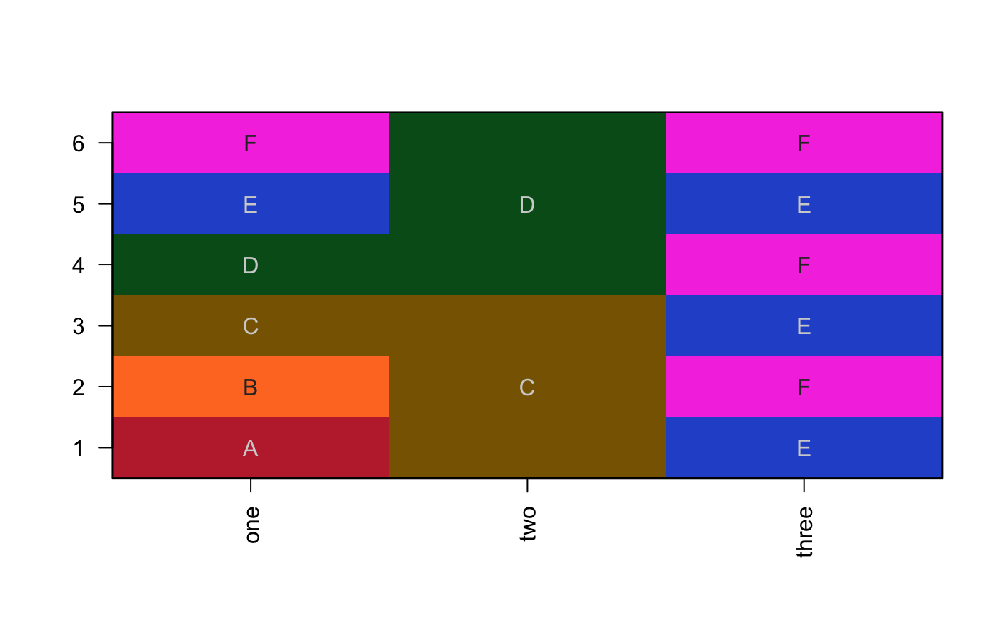
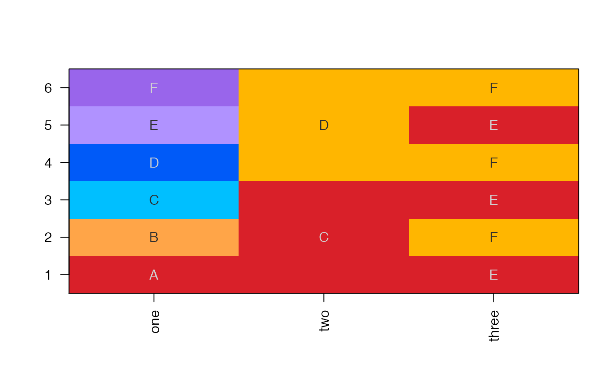

Convert data.frame to categorical colors
df2colorSub(x, colorSub = NULL, verbose = FALSE, ...)
| x | data.frame |
|---|---|
| colorSub | vector of colors, whose names are intended to match
values in the input data.frame |
| verbose | logical indicating whether to print verbose output. |
| ... | additional parameters are passed to |
data.frame of the same dimensions as the input x data.frame,
where values have been substituted with R colors.
This function is a temporary placeholder function which simply
provides categorical colors for values in each column of the input
data.frame. If colors are provided using the named color vector
colorSub, they are used to substitute values in each column,
otherwise colorjam::group2colors() is used to create categorical
colors, which itself uses colorjam::rainbowJam().
Note that providing colorSub helps keep colors consistent, otherwise
each column is independently colorized.
colorSub1 <- colorjam::group2colors(LETTERS[1:6]); df <- data.frame(one=LETTERS[1:6], two=rep(LETTERS[3:4], each=3), three=rep(LETTERS[5:6], 3)); dfColors <- df2colorSub(df, colorSub1); jamba::imageByColors(dfColors, cellnote=df);